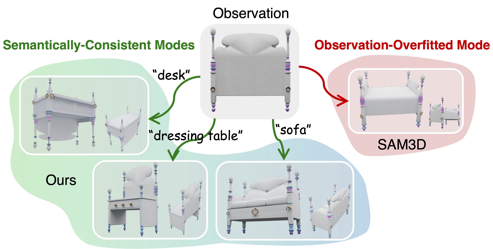
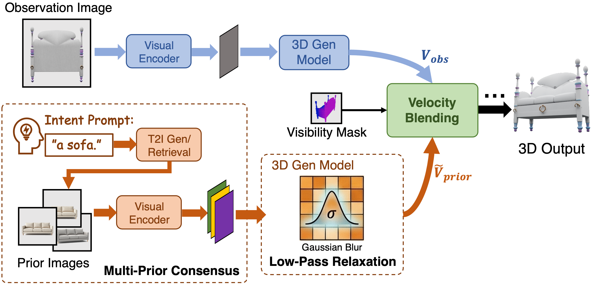
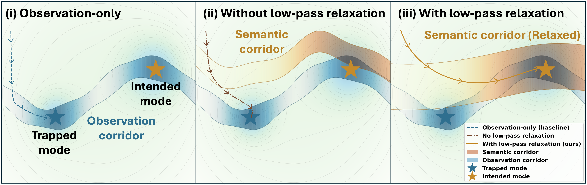

Ambiguity is the setting
Problem framing
A partial observation may support several complete 3D explanations. The task is to resolve that ambiguity, not to pretend it does not exist.
Text-Driven Amodal 3D Generation
RelaxFlow is built around a simple claim: under heavy occlusion, single-view 3D generation is not merely incomplete, it is semantically underdetermined. What the model sees should be preserved rigidly; what language contributes should remain structural, relaxed, and focused on the unseen region.
A partial observation may support several complete 3D explanations. The task is to resolve that ambiguity, not to pretend it does not exist.
Observation should act as a hard constraint, while the prompt should behave like a relaxed guide for global hidden structure.
RelaxFlow realizes this idea by reorganizing guidance during sampling through dual branches, multi-prior consensus, low-pass relaxation, and visibility-aware fusion.
When large parts of an object are hidden, the visible image may preserve local evidence but still fail to determine the full object category or geometry.

A partially visible wooden backboard can plausibly belong to a sofa, a bed, or a dressing table. Standard feedforward models often collapse to one observation-overfitted guess, while RelaxFlow lets the user resolve that ambiguity with text.
Humans routinely perform amodal perception: we infer complete objects even when large parts are hidden. Image-to-3D generation, however, usually relies on visible pixels alone. Under severe occlusion, that is simply not enough. A model may reconstruct the visible fragment faithfully and still commit to the wrong hidden object.
RelaxFlow starts from that gap. Instead of forcing the system to make an uncontrolled guess, we treat the invisible region as something the user can explicitly disambiguate with language, while the visible evidence remains anchored to the input observation.
This is why the problem is interesting. The challenge is not just “add text as another condition.” The observation and the prompt should not operate in the same way: one preserves what is already known, the other resolves what is still open.
Heavy occlusion hides category-defining structure, so the visible pixels may support several plausible 3D explanations.
The unseen region is not always a single right answer. Different prompts may all be reasonable given the same observed fragment.
The observation must be followed rigidly, but the prompt should guide global structure without overwriting visible details.
We pair a partial observation with a text prompt so the visible region stays anchored while the hidden region can be disambiguated explicitly.
The visible part of the object acts as hard evidence. Its geometry and appearance should stay faithful to what is actually seen.
The text specifies how to complete the unseen region, such as deciding whether the hidden object should resolve into a sofa, bed, or desk.
The result should remain evidence-consistent where the object is visible, and semantically aligned with user intent where the observation is ambiguous.
The method keeps the observation branch rigid and makes the semantic branch deliberately relaxed, so the two conditions can cooperate during sampling.
Many existing pipelines effectively ask one conditioning mechanism to do two incompatible jobs at once. The observed image is supposed to preserve exact visible geometry and appearance, while the prompt is supposed to choose a plausible completion for the hidden region. When both are injected with the same kind of force, conflict is almost inevitable.
RelaxFlow resolves this by evaluating two compatible trajectories on the same latent state. The observation branch remains strict and detail-preserving. The semantic branch is deliberately softened so that it can decide the global mode of the unseen object without overwriting the fine-grained evidence already provided by the observation.

Pipeline overview. RelaxFlow runs an observation branch and a semantic-prior branch in parallel, then fuses them over time and space to resolve occlusion-induced ambiguity.
This branch stays rigid. It follows the observed image closely and preserves the high-frequency details that are already supported by direct visual evidence.
Instead of forcing raw language into a visual-token backbone, RelaxFlow converts the prompt into several visual priors. What survives across those priors is the structural semantic agreement, not the incidental style of any single example.
The semantic branch smooths cross-attention logits, suppressing high-frequency instance details so the prompt behaves like a geometric guide instead of an aggressive texture-level overwrite.
Prior guidance matters most when the global mode is still undecided. Later, and especially on clearly visible regions, the observation regains control so the final asset remains evidence-consistent.
Our theoretical view is meant to justify the design choice: the semantic branch should guide broad structure, not impose instance-level detail.
A raw semantic prior is often too specific. If it carries instance-level appearance, texture, or viewpoint cues too strongly, it can clash with the observed image and push the sample away from the evidence we are trying to preserve. That is exactly the wrong behavior for amodal completion under ambiguity.
RelaxFlow addresses this in two coordinated steps. First, multi-prior consensus already strips away some idiosyncratic detail by keeping what multiple prompt-derived priors agree on structurally. Then the relaxation mechanism smooths the prior-conditioned cross-attention logits, dampening the sharp token-local responses that would otherwise behave like a hidden texture override.
In the paper, this is interpreted as a low-pass filter on the generative vector field. The effect is not to erase semantics, but to keep only the part of semantics that matters most here: the broad geometric tendency of the intended object class. The prompt no longer insists on a particular hidden instance; it opens a semantic corridor that is wide enough to accommodate the observed details, yet narrow enough to steer the sample toward the right family of completions.
This perspective also explains the fusion schedule. Early in sampling, the corridor is most useful because the model is still deciding the global semantic mode. Later, once the broad structure has been selected, the observation branch should dominate again so local geometry and appearance remain anchored to the visible evidence.

Low-pass relaxation widens the semantic corridor so the prompt can guide global hidden shape without behaving like a second rigid observation.
Visible pixels demand detail-preserving control because they correspond to direct evidence.
The prompt is most useful when it selects a plausible hidden structure rather than dictating a specific unseen instance.
Once the semantic branch is relaxed, the two conditions become complementary instead of adversarial during inference.
We evaluate the method on two settings: one where category identity is obscured by severe occlusion, and one where the same observation admits several plausible completions.
Built from 3D-FUTURE and 3D-FRONT, this benchmark focuses on cases with at least 80% occlusion. At that point, even the object category may be unclear from the visible fragment alone.
Curated from ObjaverseXL, each input image admits multiple plausible prompt branches. The point is not a single ground truth, but whether the model can follow the intended branch while staying observation-consistent.
Across both settings, RelaxFlow improves prompt alignment while remaining faithful to the observed image.
On ExtremeOcc-3D, the effect of the method is easiest to describe conceptually: once the hidden region is allowed to be semantically steered, severe occlusion stops being a dead end. The model is no longer forced into one brittle guess from the visible fragment alone. Quantitatively, this shows up as better prompt alignment and stronger 3D semantic quality while keeping observed-view fidelity competitive.
On AmbiSem-3D, the point is slightly different. The same observation can legitimately support several branches, so the question becomes whether a method can follow the intended branch without corrupting the observation. RelaxFlow performs well precisely because it treats prompt following as structured disambiguation rather than as free-form editing.
On the SAM3D backbone, CLIP-text rises from 24.08 to 27.26, while Point-FID improves from 100.38 to 81.11, indicating better semantic control without abandoning visible evidence.
On the semantic-branching benchmark, RelaxFlow reaches 0.87 CLIP-image, 27.23 CLIP-text, and 68.52% overall user preference across 32 volunteers.
The same inference logic also improves TRELLIS, reducing Point-FID on ExtremeOcc-3D from 141.48 to 97.79 and showing that the insight survives beyond one backbone.
Compared with baselines, RelaxFlow is less likely to ignore the prompt, collapse into one observation-overfitted guess, or introduce prompt-driven artifacts that break the visible evidence.

Qualitative comparisons. Under the same partial observation, RelaxFlow can follow different prompts to produce different yet evidence-consistent 3D completions. Baselines often either ignore the prompt or drift away from the observation.
The qualitative story lines up with the quantitative one. Under heavy occlusion, standard feedforward models often stay trapped in an observation-overfitted mode: they protect visible fragments, but fail to escape the wrong semantic guess. Multi-view or edit-then-reconstruct pipelines can inject prompt information, yet often do so by creating inconsistency or geometry artifacts.
We also include the additional qualitative figures from the appendix below. They cover both semantic branching cases and extreme occlusion cases, and make the same pattern visible across a broader set of examples.


Additional AmbiSem-3D examples. Across ambiguous observations, RelaxFlow follows the chosen prompt while preserving the visible evidence.

Additional ExtremeOcc-3D examples on the SAM3D backbone.

Additional AmbiSem-3D examples.

Additional ExtremeOcc-3D examples on TRELLIS.
Taken together, these examples highlight the same point as the quantitative results: RelaxFlow preserves the observed structure where the evidence is reliable, while allowing semantic guidance to act where the image alone is no longer sufficient. This is the sense in which the method is best understood as a way to handle ambiguity more cleanly, rather than simply as a stronger generator.
If RelaxFlow helps your research, please consider citing the paper.
@article{zhu2026relaxflow,
title={RelaxFlow: Text-Driven Amodal 3D Generation},
author={Zhu, Jiayin and Fu, Guoji and Liu, Xiaolu and He, Qiyuan and Li, Yicong and Yao, Angela},
journal={arXiv preprint arXiv:2603.05425},
year={2026}
}